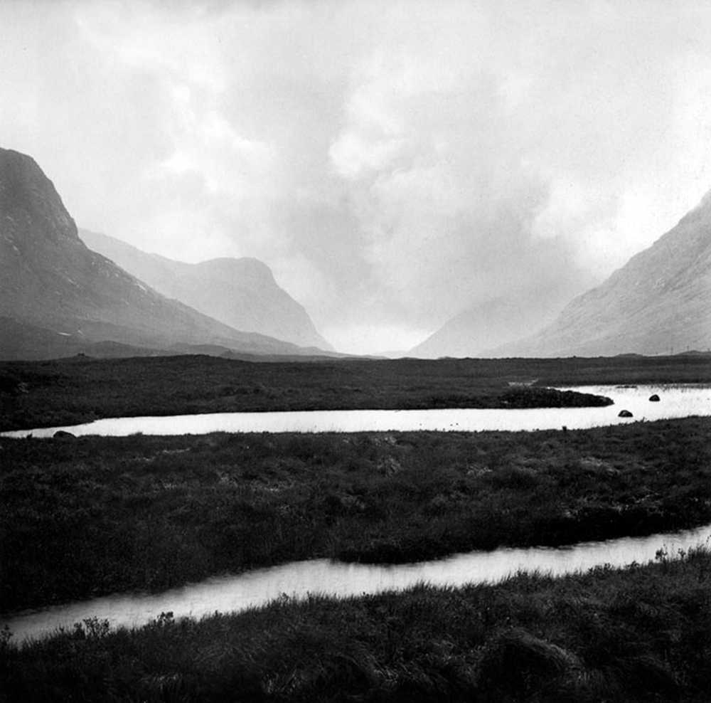
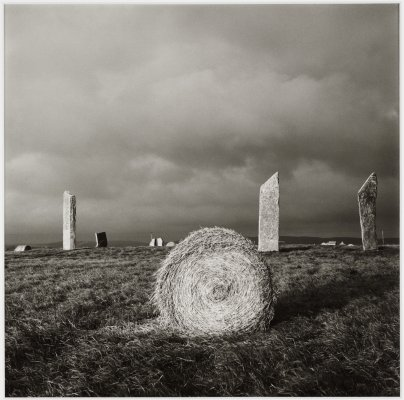
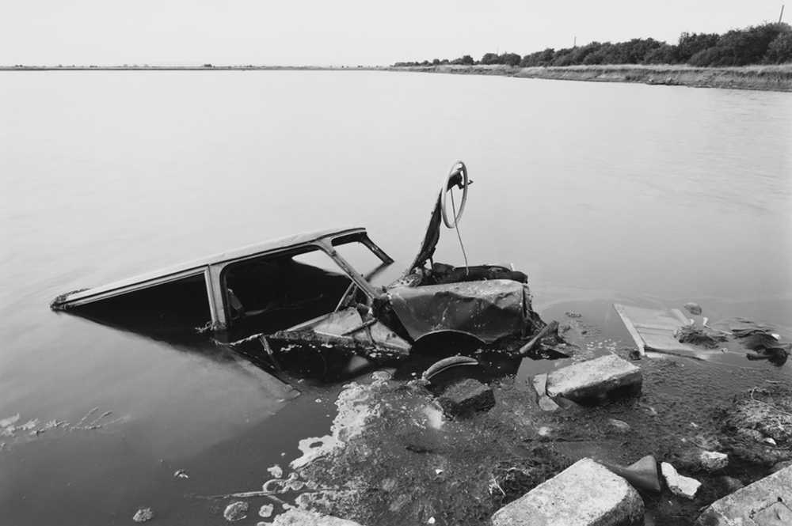
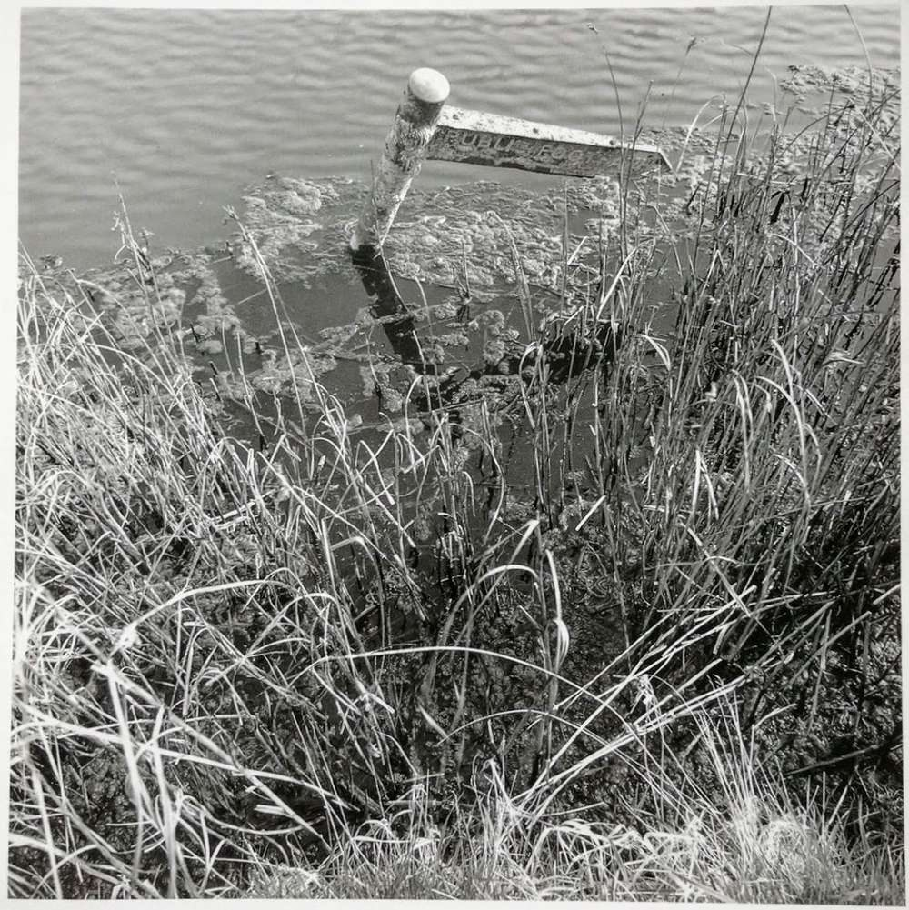
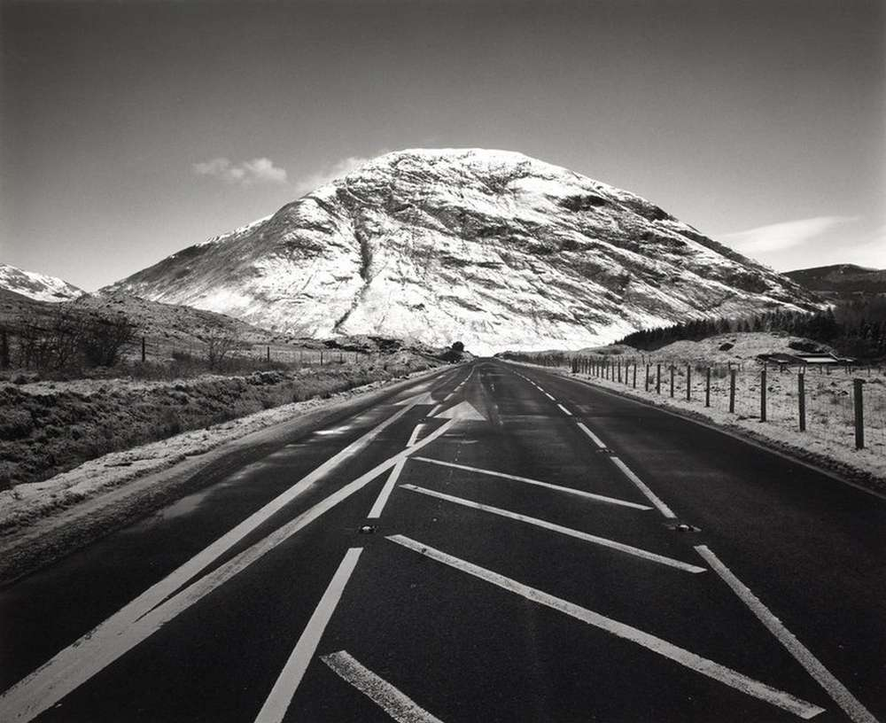

üìù The following is a mini essay / artist statement for Snag / Inflorescence - a project conducted during my masters in photography.
This project is about borders. Specifically, marginal urban spaces which are informal and unmapped sites of transition.
[[Marginal space]] denotes a territory which exists on an edge or margin of an interface. Often the consequence of abandonment as well as the by-product of urban development and the intermittent economic tide on which it is determined by, these unproductive spaces are situated between others. Due to their segregated interstice nature, they are territories which fall outside of the conventional urban circuit.
Disconnection from the productive urban interface induces negative connotations which emphasize wastefulness such as “wasteland” or “derelict land”. Additionally, numerous anthropological terms can be used to describe and interpret marginal spaces, sometimes categorizing them as concrete places between urban and rural interfaces. The etymological processes and historic scrutinization across different disciplines demonstrate the fluidity of the space and its countless interpretations.
The work avoids subscribing to any one definition or spatial connotation. Instead, it focuses on ambivalence and inexactness. Our reading of landscape is informed by a cultural construction of urban and rural, and furthermore civilization and nature. I am interested in the uncertain responses when these constructs fail us. Within photography, this is a long-established method and approach to marginal spaces.
Parisian Eugène Atget captured a ‘zone’ of empty and neglected spaces encompassing Paris in a work titled Zoniers in 1913 (Carville, 2018, p. 255). Following Atget, surrealist, Man Ray, made photographs of a vacant lot in Paris, titled Terrain Vague, which would later inspire the modern term of the same name.
Man Ray’s, Terrain Vague, as seen in Fig 1, is an influential image to the project. Though taken in 1932, it features no obvious landmarks or discerning features resulting in a timeless appearance that could be geographically anywhere. Discarded ironwork remains lay on a footprint covered embankment while a featureless tree cuts through the foreground. The scene is uncertain and apprehensive.
Fig 1. Terrain Vague Ray, 1932
Andrei Tarkovsky’s 1979 film, Stalker, is a conceptual influence. It uses the concept of marginal space, its uncertainty and unease, as a science fiction narrative plot device known as the Zone. Alex Garland’s homage, the 2018 film, Annihilation, draws from similar narratives and devices by using marginal space as fluid and dreamlike landscape. Both works are examples of using indeterminate space for storytelling.
With these influences, I began to explore and search for my own Zone. A historic road turned field border provided discourse on successional nature reclaiming human spaces and our interaction with them. Conifer plantations, long narrow strips of woodland that are often seen on the edges of golf courses and agricultural fields on the fringes of urban encroachment, presented a human vision of nature in uniformed repetitious spacings. Post-industrial wasteland demonstrated the banality of urban space and its economic ties. Within these spaces, the photographic act, through framing and composition, conveyed a myriad of pre-defined interpretations.
Photographic representations of marginal space can, through aesthetics and mediated focus, align with already established interpretations. This is a trap which fails to engage with the space and enforces modish spatial connotations resulting in stale urban imagery.
Following Tarkovsky’s conceptual influence -the use of marginal spaces as a source of functional indeterminacy and unique interpretations, I sought a unique photographic representation of marginal space. I chose a site that I am knowledgeable of and have an autobiographical connection with. The site is a neglected allotment plot. Situated out of the way in an overlooked corner of dense bramble, roses and dilapidated greenhouses, I have personal ties to this space. My grandparents took it over in the late ’1950s when they moved into the red brick terrace of three overlooking the plot. It is not a conventional allotment plot, more an extension of the house and a part of the family landscape.
The site has been the subject of constant landscaping through the working of the land for more than fifty years by the same group of people. Their history through their actions is in the land itself. Anthropologist, Tim Ingold, refers to this as a woven texture which is incorporated into plants and animals:
Human beings do not, in their movements, inscribe their life histories upon the surface of nature as do writers upon the page; rather, these histories are woven, along with the life-cycles of plants and animals, into the texture of the surface itself (Ingold, 2000, p. 198).
This weaving of history is evident through the site's rose bushes. My grandfather prolifically hybridized his favourite rose varieties. Planted in borders, they once lined patches of vegetables and grass pathways. With neglect, they are now scattered like islands, thick with bramble climbing their stems and nettles crowding between.
The roses can be interpreted as living ruins. Historic pruning, in the form of weathered snags and amputated stems, is evidence of a custodian applying shape and form to the plants. With neglect, these plants have now outgrown their intended forms with uncontrolled sporadic growth.
Fig 2. Nettle and rose (Calow, 2020).
The notion of uncontrolled nature is furthered by the presence of self-seeding and opportunistic plants commonly known as weeds. These are left unchecked to fulfil their biological processes, living alongside the cultivated plants which are more suited to the romantic notions of the English rose garden. Together, the two create ambivalence and uncertainty as seen in fig 2. Is it a garden or a post-garden space turned feral? The question raises the marginal status of the space. Rather than answering the question, the project plays with the inquiry as a border between the two states.
In its intended form, the photobook, the sequenced images invite the viewer to question the space: its past through its evident horticultural legacy and its future as post-garden feral abandonment takes hold. The work is subjective with both sides of the narrative presented within the border construct, leaving the viewer to question the ambivalent scenes against their own spatial presumptions. Furthermore, by not adopting a relevant spatial connotation such as “[[urban wildscape]]” or “derelict land”, the work uses the inexact and transitional characteristic of [[marginal space]] as a narrative device, allowing the space to be open to interpretation. This conceptual play of imprecise spatial connotation and acknowledgement that humans live through the landscapes they inhabit, demonstrates a unique [[nature culture]] relationship: a transitional border between the garden and a new wilder space where the existing cultivated nature grows uncontrolled alongside opportunistic self-seeding nature.
References
Carville, J. (2018) ‘The Narrow Margins: Photography and the Terrain Vague’, Imagining Irish Suburbia in Literature and Culture, pp. 249–273. doi: 10.1007/978-3-319-96427-0_13.
Ingold, T. (2000) The Perception of the Environment: Essays on Livelihood, Dwelling and Skill. Psychology Press.
Bibliography
Ginn, F., (2017) Domestic Wild: Memory, Nature and Gardening in Suburbia. London and New York: Routledge. ISBN: 9781409452485.
Haila, Y. (2000) ‘Beyond the Nature-Culture Dualism’, Biology & Philosophy, pp. 155–175. doi: 10.1023/a:1006625830102.
Ingold, T. (2000) The Perception of the Environment: Essays on Livelihood, Dwelling and Skill. Psychology Press.
Jorgensen, A. and Tylecote, M. (2007) ‘Ambivalent landscapes—wilderness in the urban interstices’, Landscape Research, 32(4), pp. 443–462
Jorgensen, A. and Keenan, R. (2012), Urban Wildscapes. Routledge.
Mariani, M. and Barron, P. (2014) Terrain Vague: Interstices at the Edge of the Pale. Routledge.
Wells, L. (2011) Land Matters: Landscape Photography, Culture and Identity. .B.Tauris.
Revised forward: Originally published on a blog after finishing a degree project in 2018. Preserved for demonstrating past methodologies/concepts.
Foreword: this is a summary of a recent project that was undertaken as a final for a photography course. The article involves theory as well as practical elements. It is not a howto, but you are welcome to ask questions.
Surrealism has always courted accidents, welcomed the uninvited, flattered disorderly presences. What could be more surreal than an object which virtually produces itself, and with a minimum of effort? An object whose beauty, fantastic disclosures, emotional weight are likely to be further enhanced by any accidents that might befall it?¹
Toy cameras are surrealist tools. Their crude plastic bodies are housings for unsophisticated mechanisms, requiring little to no input by the user, effortlessly producing images with artefacts that prompt unexpected and spontaneous results.
Though I am not a Surrealist, these qualities that move beyond reality and predetermined modernism are attractive to me as a photographer. They serve as a reminder that ‘photography is not bound by any obligation to reality; like any other art, it is a set of resources which can be put to a variety of uses, and out of which a style can be forged’².
Shifting this surrealist unpredictability from the toy to the handmade camera is an exercise in problem solving by working within the basic parameters of photography. An understanding of the integral theories behind the photographic medium are applied to practical and physical attributes: a light tight box, a means to prepare the recording medium (sensor, film or plate), an operational shutter, and an aperture to allow light to enter the box.
Cameras are tools, a means of capturing a scene on to a photographic medium. It follows that the handmade camera is a customised and specialised tool to meet the individual photographer’s needs. Just as an artist may use a handmade brush, material or tool to create a unique look and style, a photographer looking to create a unique representation or interpretation can do so through the act of making the tool.
Seeking to explore the landscape of the British countryside with a surrealist undetermined nature, which underlines the toy camera and lo-fi imagery, took the form of a four month final major project building two cameras and shooting with them.
Camera one started life with the premise of creating a wooden toy camera. It is a simple box camera made from 3mm balsa wood, housing a roll of medium format, and a 6x6 mask. An Agfa compur-rapid shutter sits at the front, of which the original lens elements are replaced with a meniscus element suitable for a 21mm focal length. The original plan was to implement a viewfinder, however the wide focal length made it easy to compose with. To load the camera, the top plate comes off, and film can be slid inside, similar to the Leica cameras.
diy camera
The camera, rushed in design and construction to meet deadlines, suffers from fundamental issues and faults. One major flaw is that the lens barrel on the shutter is too long for the wide focal length, creating a deep vignetting and a frame size closer to a 4x4 rather than a 6x6. With the wide focal length, the original aperture markings became invalid as the f32 became an f8. The narrowest aperture of f8 meant that distortions were not tamed enough and the resulting images, can in some cases, have distracting artefacts. A curved film plane, like that of the fujipet toy camera, was later added to diminish a curvature distortion. During the time using the camera, a minimalist centre focused composition was adopted to take advantage of the sharp centre and blurred distorted edges.
The benefit of adapting a shutter to the camera body allowed for relatively accurate and controlled exposure timings. The slow shutter speeds on the compur-rapid shutter allowed for the capture of movement, which was used to capture waterfalls.
The fastest shutter speed, a respectable 1/400th of second, allowed for the capture of a snow covered landscape in bright conditions. The low contrast of the below image was created by a pull development process as a high speed film was accidentally loaded into the camera when a slow film was needed. Rather than scrapping the film, it was decided, in Sontag's words, to court the accident. The unusual diamond shape and uneven exposure could be the result of cold temperatures making the shutter sticky.
The outcomes of the camera are interesting however, the images lack the surrealist spontaneity that the toy camera has. The shutter, with its range of speeds, insinuated a preference for perfection. Toy cameras have little to no options in the way of control, let alone shutter speeds. This is where camera two came in.
Camera two is a TLR camera made from a wooden box and a balsa insert box. A modified Holga shutter and a 50mm convex lens intended for science experiments are the basic photographic elements, while a mirror, fogged perspex, and an identical lens were used to create a rudimentary viewfinder. These devices were almost entirely housed within the insert box, while the main, larger, box housed the film and winding mechanism.
diy tlr camera
Camera two is not a work of art, it was constructed in a toy camera fashion -a rushed and slapdash manner so that a lo-fi look could be achieved from the beginning. In the way of mechanisms, it is possible to focus the camera by moving the insert-able box back and forth, however with a fixed aperture of f8, any immediate subjects are in clear focus making the need to focus redundant. This is nothing new in the realm of the toy camera as Holga and Lomography photographers are known to forget the focus and just shoot.
With a fixed f stop and shutter speed, results became more comparable to lo-fi with surreal results beyond that of the toy camera. Below is a pictorial pastoral scene which is similar in tone to George Davison's onion field. The blurriness is similar to that of the pinhole camera, without the long exposure times.
Below, is another another murky-painterly pastoral scene with just enough clarity to make out the immediate path and its details.
The light leaks and jagged edges come from a cardboard mask which was modified and experimented with over time. These artefacts were more prominent in bright conditions and subdued with tape and black matte paint.
The uncoated simple lens produces a low contrast that complements dense fog and defused light.
The lines in the below image are caused by the cardboard mask becoming too coarse and scratching the film as it travels along. It adds a texture that is eerie and horror film like. In most cases the scratches are hard to see.
In bright conditions, the uncoated simple lens performs well enough for the intended purpose. The below image is absent of flares and has enough contrast to produce a stark depiction of a single tree.
All of the negatives were scanned and processed digitally. The darkroom could have provided further alternative processes, enough for a whole other project. Deadlines meant I could not pursue this. The post processing attributes applied -slightly burning in vignetting and adjustments to contrast, would be applied in the darkroom.
Conclusions drawn from this project
Intending to explore the landscape with a surrealist lo-fi undertone has resulted in processes at the fundamental level of photography. The basic tools created to produce the outcomes could have taken many forms in varying mediums. The choice of medium format as a recording medium seemed natural given that the majority of toy cameras use it. Medium format is also used by British landscape photographers, Micheal Kenna and Fay Godwin, of whom are personal influences and heroes of mine. Additionally, though the project was not about perfection, it could have been achieved, if desired, by mounting a medium or large format lens. The cameras built for the project were successful for the purposes of looking beyond the toy camera and exploring the broader fundamental attributes of photography.
The pursuit of capturing the landscape with a simple camera over traditional and conventional equipment is synonymous with Edward Weston's statement that 'richness of control facilities often acts as a barrier to creative work' and that 'the task can be made immeasurably easier by selecting the simplest possible equipment and proceduresand staying with them'³. Photographers can be addicted to the pursuit and acquisition of equipment rather than the photograph and message they wish to convey. I am guilty of this at times -the zeal of shiny brass Leica. Using a simple camera, whether a toy, pinhole or handmade camera, removes the focus from equipment and to the creative semiotics and message.
The landscape photographs in this project, and others such as my Holga work covering the Peak District, are people-less, sublime, and unsentimental. Non-photographers will often use the word moody to describe the work, identifying the sublime visual signifiers as dark, eerie, and bleak. I see the work as a reminder that under the façade of the social construct: British countryside being a picturesque idyllic tidy garden, there lies a wilderness under layers of centuries old management and manipulation of the land.
A gallery of images from the project can be found here rjcalow.co.uk/constructed/
References
Sontag, On Photography. Page 52.
Scott, C. (1999). Spoken Image: Photography and Language. Page 22.
Weston, E. (2003). Seeing photographically. In L. Wells (Ed.), The Photography Reader. Page 107. (Original work published 1930)
An essay about Fay Godwin and the British landscape, written during my degree in 2017.
The notion of ‘Landscape’ in Britain implores images of coastlines, rivers, canals, fields, moorland, hills, mountains, villages and gardens. Though broad in scope, these designations and types of environment are far away from the notion of ‘wilderness’. Like the extinct wolves and lynxes which were indigenous to the British isles so to has the swathes of untouched forest and moorland become extinct, carved up, transformed and managed. The entire land and sea is managed, creating a link between the British landscape and the idea of land ownership. The British ‘countryside’ is a social construct of history, privilege, and ownership with hedges, fences and stonewalls carving up the land, whilst castles to village cottages lay claim to land. Pictorial British landscapes only enforce this idea of ownership, as Berger suggests ‘To have a thing painted and put on a canvas is not unlike buying it and putting it in your house. If you buy a painting you also buy the look of the thing it represents’ (Berger, 2008, p. 83). Furthermore the British pastoral countryside, through land management and its association of ownership, is often depicted as a safe rural idyll regardless of recent hardships such as floods and culling of diseased animals. (Wells, 2011, p. 164).
A photographer that explored the British landscape and the subsequent countryside social construct was Fay Godwin. Godwin was active from the mid 70’s to the early 1990’s with the most famous work being in the accessible printed form of books namely ‘Land’, 1985, and ‘Our Forbidden land’ printed in 1990. Both books, with their different agendas, offer the viewer an insight into the British landscape at the end of the 20th century and are the subject of this essay.
Land
‘Land’ consists of 127 black and white images of Godwin’s work spread over 10 years within the landscape genre. The majority of ‘Land’ falls within a traditional romanticist view of the landscape, similar in tone to archetype British landscape painters Gainsborough, Constable and Turner. This aesthetic presents the countryside as the traditional pastoral scene and the rural idyll, but with a modernist focus on form and a photographic authority of authenticity and realism. Although the photographs are presented in this straightforward traditional aesthetic often associated with the unrealistic romanticist vision, Godwin strives for realism by avoiding picturesque imagery. On ‘the south bank show’ (1986) Godwin suggested a wariness of picturesque pictures commonly seen in commercial landscape photography such as that on postcards arguing that they were sentimental and idealistic, presenting the countryside in an unrealistic way (appendix A). Instead, Godwin was interested in the immediate scene explaining ‘I’m quite often frightened out in the landscape, and it’s often quite simply indifferent, and I’m interested all those different aspects’ (Godwin, 1986, pt. 1:27). These aspects are asserted in the organisation and order of the work with the book starting off in grandeur with impressionistic dark contrasting images of the Scottish highlands before turning to topography studies of ancient stones, farm buildings and rural pastoral land. However towards the end of the work there is an encroaching antagonism and disharmony with industry, power stations, and debris making appearances which Godwin uses to comment on environmental issues as if foreshadowing Godwin's follow up book.
Analysis and Technical break down
‘Land’ is a broad study of British landscape featuring minimalism, juxtaposition, topography, and abstract studies amongst traditional landscape scenes. Subjects range from ancient monuments, farmland, village scenes, coastlines, moorlands, and mountains.
The majority of images are square 1:1 ratio, while others are slightly wider 4:5 and even wider 2:3. These ratios relate to the fact that the entire work is shot with medium format. Godwin was never brand loyal to one particular camera manufacturer, but had a soft spot for the Swedish Hasselblad namely the 500cm which took square 6x6 images. Other cameras used by Godwin include a Plaubel Makina which took 6x7 images (4:5 ratio) and a Linhof for wider 6x9 images (2:3 ratio). Lenses ranged from a very wide 21mm, to a standard wide 35mm to a standard normal 50mm (see Appendix B for emails from Peter Cattrell, Godwin’s printer).
Composition traits and techniques follow the simple rule of thirds with subjects off centre and land taking up three quarters of the frame. The use of symmetry, notably the square images, brings balance to scenes as seen in Figure 1 and Figure 2 where the horizon line splits the sky and mountains from the moorland heath, further emphasized by the burning of the land creating two contrasting halves. Another trait is having the camera close to the ground, setting the viewer within the environment rather than looking down at it, this can be seen in Figure 1 and Figure 2.
Figure 1. Glencoe from Lochan na Fola(Godwin, 1985, p. 3)Figure 2. Four trees, Rannoch Moor(Godwin, 1985, p. 16)
Juxtaposition as a pictorial visual device is used adjacent with topographic elements creating a contrast of time, history and physical attributes of artificial and natural elements. This can be seen in Figure 3 whereby Godwin uses a traditional pastoral emblem, the humble hay bale against the ancient stones. The cylindrical bale contrasts against the straight lines of the ancient stones, appearing modern and out of place yet here they both exist. This tension and questioning between both elements is enhanced with the looming dark skies which look to have been complemented with burning during printing.
A similar, more subtle, use of juxtaposition is seen in Figure 4. Godwin has used an ancient marker stone to playfully imitate the angle of the stone wall top left and also to connect with the wall at the top of the marker. The burning of the marker shadow and the adjacent rock ultimately creates a zigzag through the entire image hinting the notion of carved up and managed land.
Despite the images in Figure 3 and Figure 4 being of areas of agricultural land, more so in Figure 3 though Figure 4 could have livestock on the land, there are no people. This is a trait throughout the work. There are traces of people -paths, villages, churches, but never the rural people themselves. This emptiness and loneliness is a key theme to the work, it enables the work to be solely focused on the land.
Figure 3. Stones of Stenness, OrkneyFigure 4. Marker stone, Old Harlech to London Road, Wales (Godwin, 1985, p. 69)
Godwin has a tendency to fill the frame, getting the most out of the substantial negative size provided by medium format. By keeping cropping to a minimum at the printing stage (see Appendix B for emails from Peter Cattrell, Godwin’s printer), and by using all of the frame in terms of composition, composing completely in camera, the images have a consistency. This can be seen in Figure 5 whereby Godwin has chosen to embrace the environment and negative space surrounding the subject rather than cropping.
As discussed before, towards the end of ‘land’, there is an antagonism and conflict with society environmentally impacting the British landscape and threatening its safe pastoral countryside. This can be seen directly with pollution as in Figure 5. Here Godwin uses perspective, whether intentionally or not, by looking down at a rotting car half submerged in water. Godwin rarely used this visual trait opting for an immersive low down but level horizon perspective as seen in previous Figures. By looking down at the car and the lagoon, they appear weaker and fragile, perhaps to suggest about the fragility of the environment itself or to show the scene itself is something to look down upon.
Godwin also uses more subtle ways to introduce environmental issues into the work with visual metaphors such as Figure 6. A solitary broken bench looks out to sea, whilst an oil rig appears behind the rock formations as if to say the view is as broken as the bench. These environmental issues and related themes are explored further in Godwin’s follow up printed work.
Figure 5. Rotting car, Cliffe Lagoon (Godwin, 1985, p. 111)Figure 6. Lerwick, Shetland(Godwin, 1985, p. 121)
Our forbidden land
Following ‘Land’, ‘Our forbidden land’, printed in 1990, features 188 plates and a number of supporting images. The first image in the book as seen in Figure 7 epitomises the theme and voice of the work- a submerged public footpath sign amongst reeds. It echos the image of the rotting car in the previous Figure 5 with similar perspective. Additionally to the side, if the reader wasn’t clear about the message of this image, there are three contradictory quotes by the then prime minister Margaret Thatcher on the subject of the environment.
 Figure 7. Untitled(Godwin, 1990, p. 5)
Godwin’s political agenda is further voiced in the introduction written by herself, whereby revealing personal insights on copyright and restricted access to land, and discussing social environmental issues such as the use of pesticides and artificial fertilisers. This comes as Godwin, three years prior the publication of the work, was made president of the Ramblers Association, of which Godwin dedicates the book to. Being exposed to this political and active position, Godwin expresses concern for the conservative rural countryside, not just from contemporary society, but also from itself with ‘big business’ farmers using chemicals and exposing employees to poor working conditions.
In relation to photography, Godwin expresses concern about restrictions that present a legal minefield and potential headache for professional photographers.
‘It is extraordinary that Government agencies and others so often try to stop us photographing our heritage, our parks and gardens. They seem to think they can censor as well as try to copy-right the landscape and our heritage.’ (Godwin, 1990, p. 10)
This is particularly true for landscape photographers for example: the peak district, Britain's first national park, is 90% privately owned - only 17% of which is owned by the national trust and peak district national park authority with another 11% owned by water companies. So little of the land is actually free of copyright and is owned by many individual bodies rather than one collective. Understanding what is copyrighted and what is copyright free is commercially required and time consuming if the photographer has no local knowledge. (nationalgeographic.com, 2011). This introduction is supported by topographic images of signs displaying “dogs shot” and “keep out”. These range from farms, water companies and military installations.
Analysis and Technical break down
There are several different types of genre photography featured in this work. While there are landscapes in the traditional pictorial form like those featured in ‘Land’, there are also documentary and photojournalism styled images. The phrase ‘political landscape’ comes close to describing the work. Godwin, expressing political beliefs through photography, moves from the modernist focus on form to a postmodern focus of scrutiny.
Figure 8 is the selected cover image and effectively summarizes the work itself. A dominant snow covered Glencoe mountain is juxtaposed against the black tarmac of the road cutting through the landscape and disappearing into the mountain. Two white road markings in the form of arrows enforce the leading lines from the road and roadside fencing, pointing to the mountain. These directional elements indicate a conflict between the more natural rural countryside and progressive modernisation with its tarmac arteries.
Figure 9 is a photograph taken not far the peak district in Derbyshire. In the foreground, an excessive bold sign displaying various ‘Private land’ motifs is leaned against a low dry stone wall of which a sheep looks over and stares at Godwin. In the background is a vast pastoral scene complete with what looks like a tor and a small woodland. This image has humour with the watchful sheep, and irony that an excessive sign could be placed by such a low wall whilst showing the attitudes of the landowner to others. This image has a photojournalistic style while still retaining some of Godwin’s landscape traits such as the use of the rule of thirds.
Figure 8. Meall Mòr, Glencoe(Godwin, 1990, p. 123)Figure 9. Brassington, Derbyshire(Godwin, 1990, p. 99)
The previous images fit the characteristics of Godwin’s medium format practice, particularly the 6x7 format, however there are other formats in this work such as the use of 35mm. Lighter, more portable, and favourable to the spontaneous style of photojournalism, Godwin uses 35mm film as and when needed with a leica rangefinder. (see Appendix B for emails from Peter Cattrell, Godwin’s printer).
Figure 10 shows a spread within ‘our forbidden land’ from a series of images consisting of several pages exploring Cornwall. Here Godwin uses a photographic style akin to photojournalism through observation and non intervention, creating a narrative through sequential presentation of four images covering Lands end. Contrary to the loneliness of ‘Land’, Godwin captures people here to document Cornwalls tourism with an image of tourists photographing themselves by a Lands end signpost. Echoing Sontag’s statement: ‘Photographs will offer indisputable evidence that the trip was made, the program was carried out, that fun was had’ (Sontag, 2014, p. 9). By capturing the photographic act, Godwin shows the area is significant to tourists. The other images on the spread feature wildlife with a seagull sat amongst tourists at picnic tables, a miss framed in-flight seagull, and a bevy of swans in a model town showing Godwin’s humorous side.
Figure 11 shows a spread under the title ‘Far too little access’ in which Godwin carries out, in a new topographic fashion, a topology study of estate signs in different forms. The left image is comparable to Lee Friedlander’s shadow images with Godwin’s use of shadow as a protagonist confronting the private sign being a subjective comment on restrictions to land (Sharpe, 2017, p. 268).
Figure 10. Cornwall Spread(Godwin, 1990, pp. 92–93)Figure 11. ‘Far too little access’(Godwin, 1990, pp. 64–65)
Through the use of the 35mm format, Godwin not only explores tourism, wildlife and topology but also society's connection to the countryside by covering rural food festivals, reclaimed urban land, farm oriented theme parks, and exploring public farms as seen in Figure 12. These images support the cultural construct of the countryside being a safe place whilst also showing the general public's exposure to rural environments that are fabricated and child safe. Godwin chooses to take a positive stance by photographing children interacting with animals. The spread in Figure 12 features 3 images of children.
These 35mm film photojournalism images tend to be shot with a 35mm focal length lens, with which Godwin uses to place the subject within a surrounding environment creating an environmental portraiture style. These supplement Godwin’s people less medium format images which focus more on form.
There are exceptions in the work where Godwin favours medium format for documentary orientated images that are not pictorial in nature, but sombre in tone. This could be down to Godwin only having a particular camera at that moment in time, or felt the scene was worthy of a bigger negative. The image in Figure 13 is an example of this. Godwin uses a 6x7 medium format camera to capture farm rubbish dwelling near a footpath. These types of images are a continuation of ‘Rotting car, Cliffe Lagoon’ (Figure 5) and are usually printed on a full page.
Figure 12. Spread(Godwin, 1990, pp. 168–169)Figure 13. Farm rubbish along public footpath(Godwin, 1990, p. 51)
Conclusions
On the surface, ‘Land’ is a book of accessible fine art images, which anyone with a passion for the countryside or pictorial landscapes can enjoy. Underlining this is a challenge to formal romantic depictions of the countryside. It can be seen as a modernist study of landscape with the use of black and white film putting emphasis on the shape and tone (Wells, 2015, p. 334). Additionally the aesthetic choice of monochrome is a form abstraction and reaction against picturesque commercial landscape images with vivid unrealistic colours. Godwin critiques postcards on the ‘the south bank show’ stating “I find most British postcards absolutely revolting” (Godwin, 1986, pt. 4:04). Nevertheless, monochrome is a key aesthetic and homogeneous feature throughout both works. The modernist focus of form attributes an objective and unsympathetic presentation whilst tonal values such burning of clouds and land help Godwin express the character of the space itself whether that be indifference, intimidation, or admiration of beauty (see Appendix A for Godwin’s thoughts on aspects of landscape). It is this subtle expression of character that challengers the safe rural construct and sets Godwin's work aside from exaggerated picturesque images which embellish rather than capture.
‘Our forbidden land’ turns the subtle expression of space through landscapes to a journalistic style critique of the British countryside. Through a postmodern scepticism, the work is critical of contemporary modern society but also rural inhabitants too. Godwin explores the countryside impartiality without bias for example, in the book, there are photographs of rubbish from farms and from urban visitors. This gave Godwin, a photographer that can masterfully capture a landscape to an extremely high standard, the incitement to photograph banal subjects like rubbish and debris. ‘Our forbidden land’ is broader than its predecessor with narrative driven photojournalism supplementing topography studies and political landscapes, making the work both ideology driven and artistic.
Appendix A
Fay Godwin as quoted on The South Bank Show 1986 produced by Hilary Chadwick.
On aspects of the landscape:“In landscape there’s all sorts of things as far as I’m concerned. It is of course very beautiful in many ways but, that isn’t all that it is. I feel in many ways landscape can be quite threatening -I’m quite often frightened out in the landscape, and it’s often quite simply indifferent, and I’m interested all those different aspects.” (Godwin, 1986, pt. 1:27)
On the notion of picturesque:“I am kind of wary of picturesque pictures. I get sort of satiated with looking at postcards in local newsagents and at the sort of picture books that are on sale, many of which, don’t seem to bear much relation to my own experience of the place.” (Godwin, 1986, pt. 3:28)
"The problem for me about these picturesque pictures, which proliferate all over the place, they are a sort of blanket, they are almost like a very soft warm blanket of sentiment which covers everybody’s idea about the countryside. […] It idealises the countryside in a very unreal way” (Godwin, 1986, pt. 7:09)
Appendix B
Emails from Peter Cattrell who printed and worked with Fay Godwin. (Removed for public).
Godwin, F. (1990). Our forbidden land. Jonathan Cape.
Godwin, F. (2005, May 31). No Man’s Land - Fay Godwin's last interview. Retrieved from ephotozine.com/article/ no-man-s-land---fay-godwin-s-last-interview-67
nationalgeographic.com. (2011, February 15).